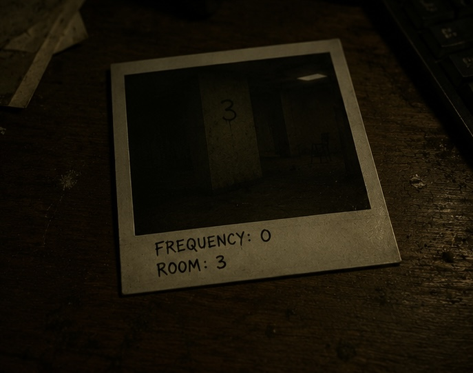
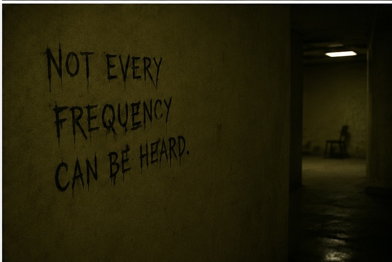
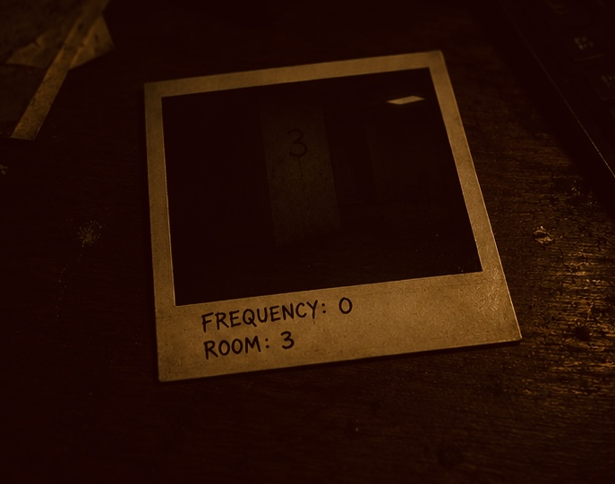

UNINDEXED — DO NOT CATALOG
Material below was not assigned to the master index and does not correspond to any logged transmission. Source of recovery unknown. Captions are as found, not as verified.


